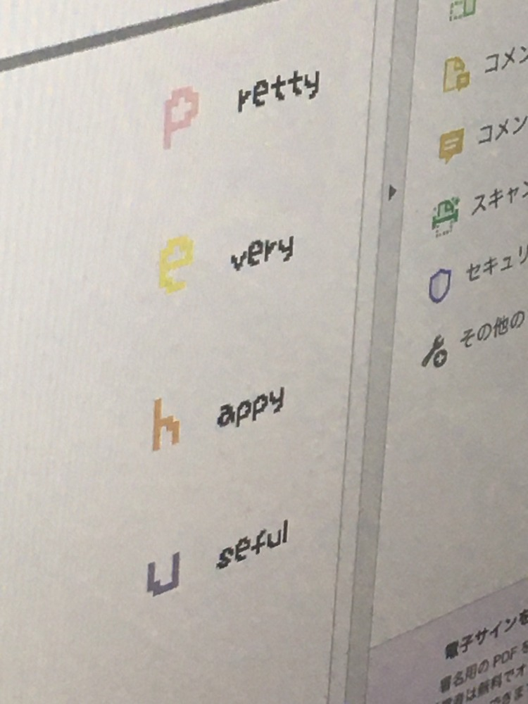

時々、PEHUの由来を聞かれることがあるんだけど、その時作ったウェブサイトに割り振られたドメイン名がpe.huだったってだけで、特別な意味も理由もない。
そもそも名前って人につけてもらうものでしょ？偶然そこにあった文字を名前にしたくらいが自分にとってはちょうどいいし、親もそうやって俺に名前をつけてくれたらしいし。
確か西天満のペフを終えた2019年の夏頃、当時のメンバーとP E H U から始まるペフに似合う言葉を探そうって遊びを始めた。
なんとなく楽しそうっていう理由で始めたことだったけど、自分たちはペフにどんな印象を持っているか、どういう風に見られたいと思っているのかを考える良い機会にもなったと思う。
そうやって見つけた言葉をツイートしてるうちに、これまでにコラボレーションした方やSNSで繋がっている方たちからも、P E H Uに似合う言葉が届くようになった。
集まった言葉がどれも全部ペフに似合ってるってことに感動したのはもちろんだけど、ペフについて考えてくれる人がいるってことを実感できたことが本当に嬉しかった。
それぞれがそれぞれに抱くペフへの異なる（けど似てもいる）印象はどれも等しく正しいし優劣はない。否定的な言葉も肯定的な言葉も、全部を平等に大切にすることがペフにとって大切だってことだけは自信を持って断言できるし、集まった言葉に似合うように変化し続けるペフをずっと大切にしたい。

あなたの大切なものは何ですか？
↩︎